In Issue 8, we watched AI agents learn to code on their own. They could read your project, write code, run tests, hit errors, fix them, and iterate — all without a human copying and pasting. It felt like the future had arrived.
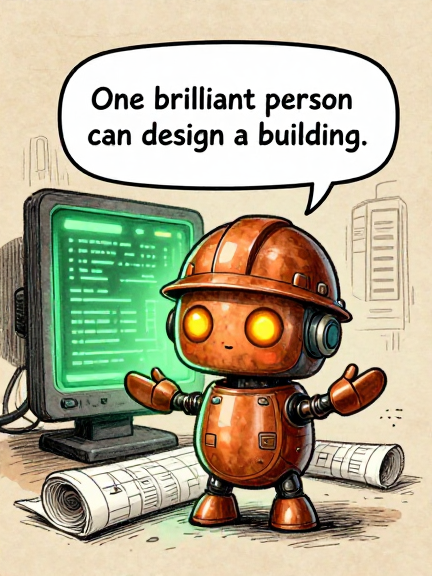
One brilliant person can design a building.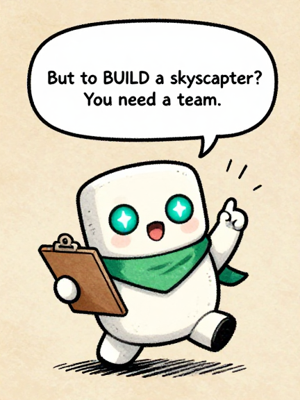
But to BUILD a skyscraper? You need a team.But there was a ceiling. And anyone who pushed a single agent hard enough slammed into it.
Give an agent a small, well-defined task — "write a function that sorts a list" — and it shines. Give it a large, messy, real-world project — "build me a full web application with authentication, a database, a payment system, tests, and documentation" — and something goes wrong. Not immediately. Not dramatically. But gradually, steadily, inevitably.
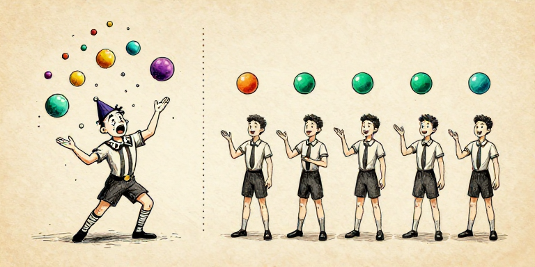
The agent starts strong. It makes a plan. It writes clean code. But as the work accumulates — as the terminal fills with thousands of lines of code, error messages, file contents, and conversation history — the agent begins to drift. It forgets its own plan. It revisits problems it already solved. It contradicts decisions it made twenty minutes ago.
It is not getting dumber. Its brain is getting full.
"The solution to an overwhelmed mind is not a bigger mind. It is more minds, each focused on less."
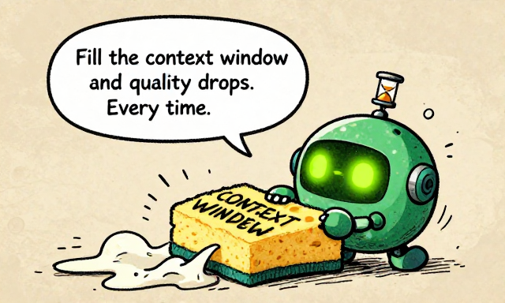
Fill the context window and quality drops. Every time.This is the story of what happened next: the leap from one overwhelmed agent to a coordinated team of focused specialists. The leap from solo to swarm.
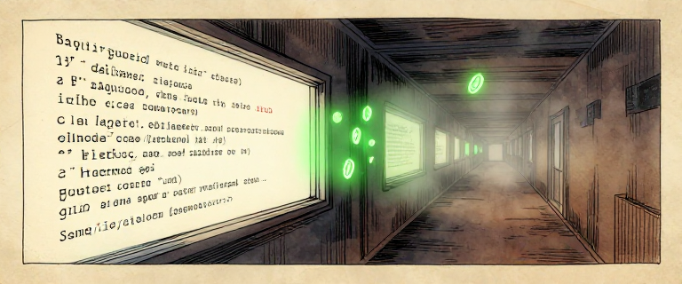
Between 2023 and 2025, AI companies raced to build bigger context windows — the amount of text a model can "see" at once. Windows grew from 8,000 tokens to 32,000, then 128,000, then 200,000 and beyond. The assumption was simple: more memory means better performance.
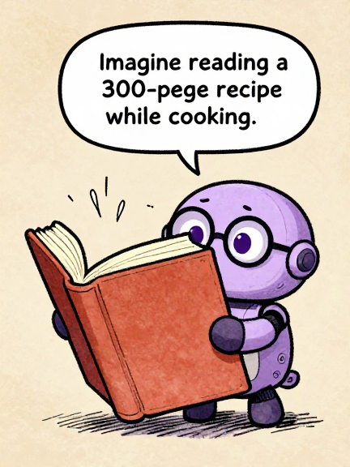
Imagine reading a 300-page recipe while cooking.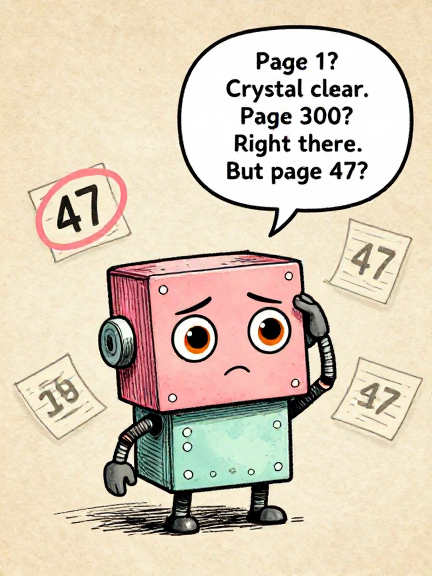
Page 1? Crystal clear. Page 300? Right there. But page 47?It did not work out that way. Researchers Nelson Liu and colleagues published "Lost in the Middle" (formally published in Transactions of the Association for Computational Linguistics in 2024). They tested how well language models actually used information placed at different positions in their context. The results were striking.
Models are great at remembering what they read first and last. The middle? Not so much.
Models performed well on information near the beginning and the end of their context, but struggled significantly with information in the middle. A U-shaped curve. The bigger the context window, the deeper the valley.
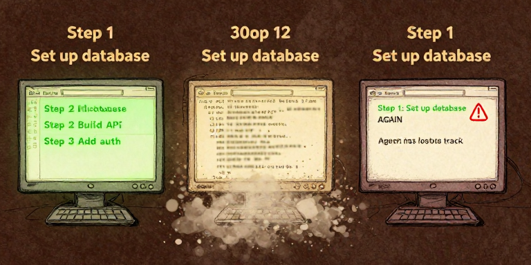
For coding agents, this creates a vicious cycle. The agent accumulates context relentlessly: file contents, tool outputs, error messages, its own reasoning. By the time it is deep into a task, the careful plan it made at the beginning has been pushed into the foggy middle. The agent does not "forget" — the plan is still technically there. But the model's attention has drifted away from it.
Practitioners started calling this context degradation — the agent's ability to use its full context effectively breaks down as the context fills up. And making the window bigger did not fix it. It just moved the fog further away.
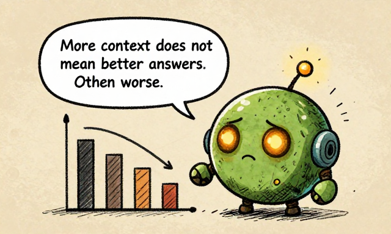
More context does not mean better. Often worse."Have you ever re-read a paragraph in a textbook because you forgot what it said? Now imagine re-reading it while someone keeps adding new pages between you and the paragraph, and you can never go back more than 300 pages. That is what context degradation feels like to an AI agent."
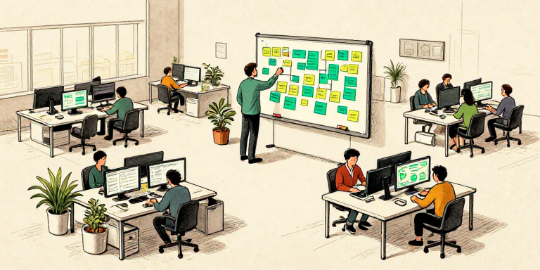
The insight was not new. It was ancient. Every complex human project — a building, a film, a space mission — is built by teams of specialists. An architect does not also do the plumbing. A director does not also edit the film. Each person focuses on what they know best, and someone coordinates the whole effort.
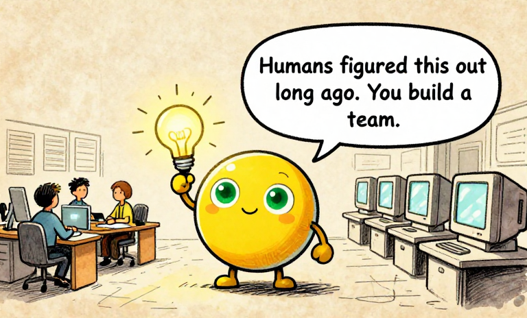
Humans figured this out long ago. You build a team.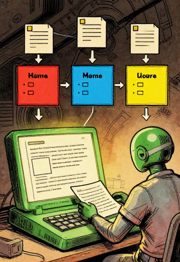
By early 2025, engineers began applying this principle to AI agents. Instead of one agent drowning in a 200,000-token context, what if you had multiple agents, each with a clean, focused context, each handling one part of the job?
The multi-agent framework explosion of 2023-2025
Microsoft Research released AutoGen (~September 2023) for multi-agent conversations. Joao Moura created CrewAI (late 2023) — role-based agent crews. LangChain released LangGraph (early 2024) using graph theory. In China, DeepWisdom released MetaGPT and Tsinghua built ChatDev. And in October 2024, OpenAI released Swarm, a lightweight experimental handoff framework.
Meanwhile, Addy Osmani — an engineering leader at Google's Chrome team — explored practical patterns connecting traditional software engineering with multi-agent orchestration: code review, pair programming, and microservice architecture applied to AI agent teams.
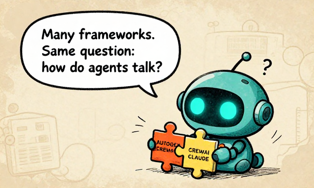
Many frameworks. Same question: how do agents talk?"The oldest pattern in computing: when one thing hits its limit, use many things together. Single CPUs → multi-core. Single servers → distributed systems. Single agents → swarms."
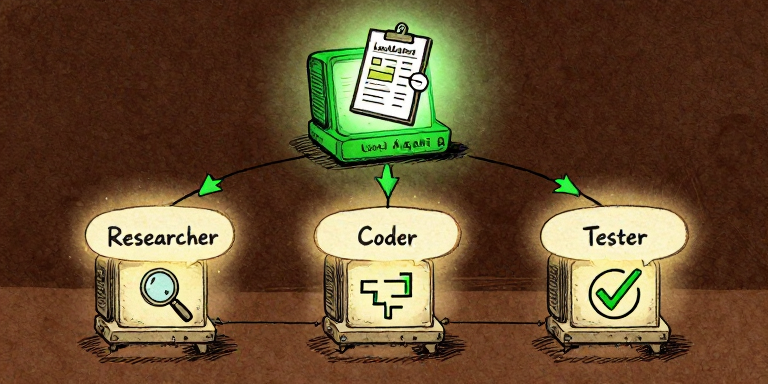
The first and most common architecture is hierarchical: one lead agent that coordinates, and multiple worker agents that execute.
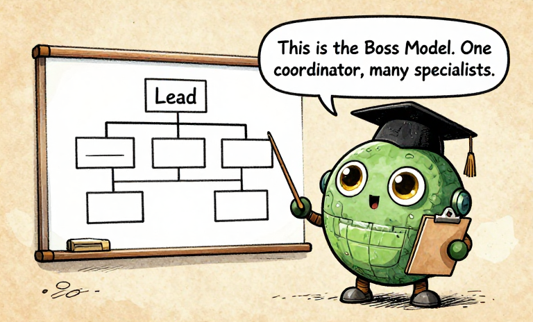
This is the Boss Model. One coordinator, many specialists.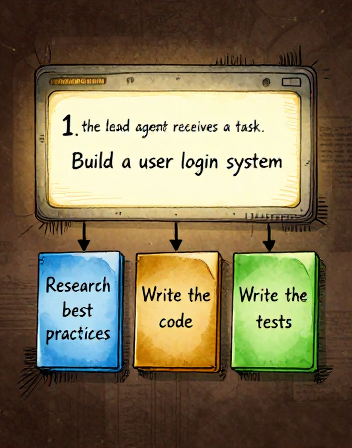
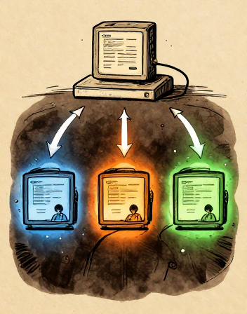
You give a complex task to the lead agent. It makes a plan: "This task has three parts." It then spawns specialist agents — one for each part — and gives each one a focused brief. Each specialist works within its own clean context. When each finishes, it sends its output back to the lead, which synthesizes everything into a final result.
One lead coordinates, specialists execute, results converge
This is the pattern behind Claude Code's Task tool. When Claude Code needs to accomplish something complex, it can spawn subagents — isolated instances that each tackle a piece of the puzzle. The parent agent maintains the big picture while the children handle the details.
It works well because the lead agent's context stays clean. Instead of accumulating thousands of tokens of code output, error logs, and intermediate reasoning, the lead only sees the summaries. The messy details live in the specialists' contexts — which are created fresh and destroyed when done.
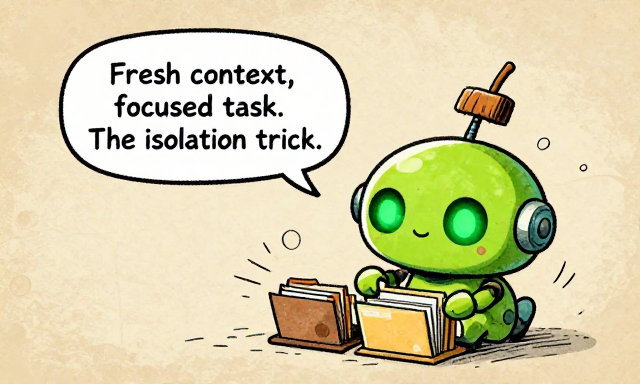
Fresh context, focused task. The isolation trick."Think about the last group project you worked on. Did you have one person coordinating who did what? Or did everyone just figure it out as they went? Which worked better?"
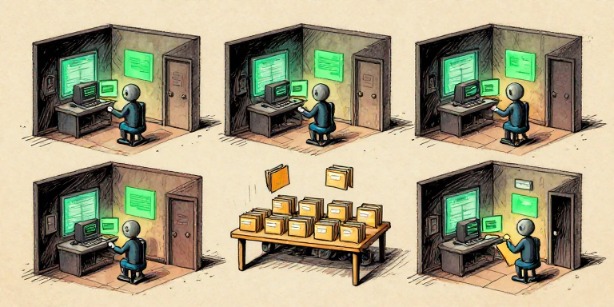
In early 2025, practitioners experimenting with Claude Code developed a distinct approach they called the Constellation Pattern, and it took multi-agent isolation to its logical extreme.
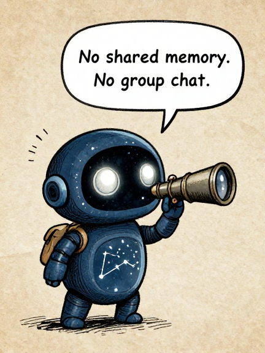
No shared memory. No group chat.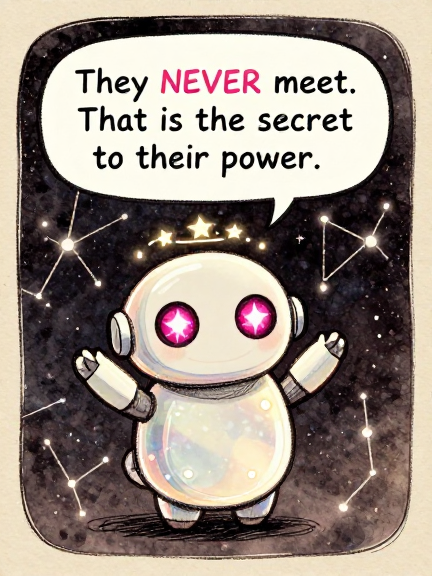
They NEVER meet. That is the secret to their power.Each agent is a completely separate invocation of the AI model. Not a different persona within one conversation. A separate process, with its own fresh context window, that starts from zero.
The agents communicate through one channel only: files on the filesystem. Agent A writes its output to a markdown file. Agent B reads that file as input. Agent B has never "been" Agent A. It has no memory of Agent A's reasoning. When it reads Agent A's output, it processes it as external information — like a document written by a stranger.
The Constellation Pattern: isolated agents, file-based communication
This design provides three powerful guarantees:
1. True cognitive isolation. Agent B genuinely cannot be influenced by Agent A's reasoning — only by Agent A's written output. Fresh eyes, every time.
2. Complete audit trail. Every piece of inter-agent communication is a file on disk. Nothing hidden, nothing lost.
3. Perfect recoverability. If the system crashes, every completed agent's work is already saved. Restart from wherever you left off.
"True isolation is not a limitation. It is a superpower. When each agent thinks independently, you get genuine diversity of analysis — not an echo chamber wearing different hats."
Try orchestrating a swarm yourself! Assign tasks to agents, watch them work in parallel, and see file-based communication in action. One of the project templates even mirrors the pipeline that produced THIS comic.
Open Swarm Simulator →It is worth noting that the Constellation Pattern is one promising approach among several, not a universal standard. The multi-agent space is still young, and the best patterns may not have been discovered yet.
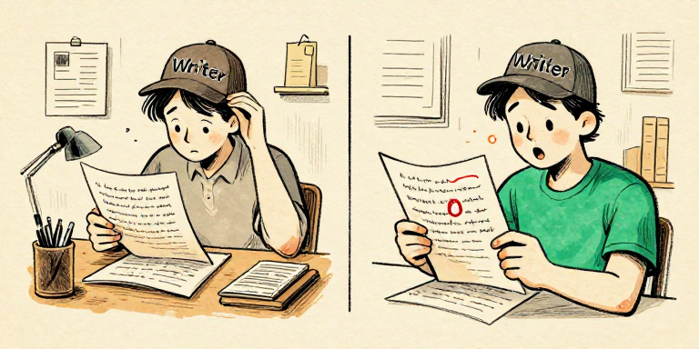
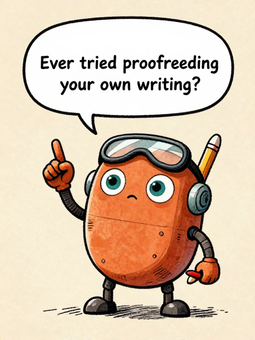
Ever tried proofreading your own writing?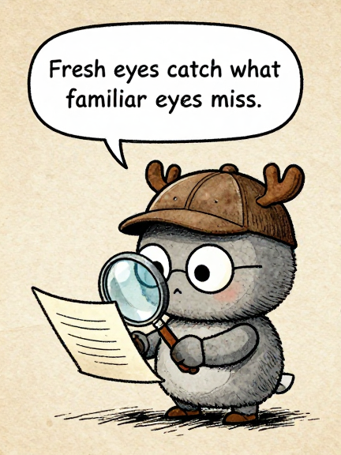
Fresh eyes catch what familiar eyes miss.Here is a deceptively simple experiment. Give a language model a coding task. Let it write a solution. Then, in the same conversation, ask it to review that solution for bugs. It will almost always be generous — because it already "knows" the intent behind every line.
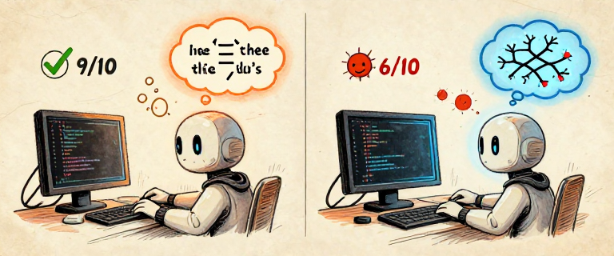
This is the "Same Brain" problem. When a single model instance generates both the work and the critique, the critique is statistically conditioned on the work. The tokens of the review are generated in a context that already contains the tokens of the code. The "critic" is not independent — it is the same brain wearing a different hat.
Now run the experiment differently. Spawn a completely separate model instance. Give it the same code with no conversation history. This second instance routinely finds issues the first one missed. Not because it is a better model — it is literally the same model. But its context is clean.
Isolation eliminates anchoring bias — the same model critiques better from a fresh context
This is why the Constellation Pattern insists on process-level isolation, not just prompt-level role-playing. When Agent B reads Agent A's output file, it processes it as external data — the same way it would process any text you paste into a fresh conversation. The anchoring effect is eliminated by the hard boundary of a separate process.
Files make this boundary visible and enforceable. No shared memory, no hidden state, no runtime connection — just text on disk. The simplest possible interface, and therefore the hardest to accidentally contaminate.
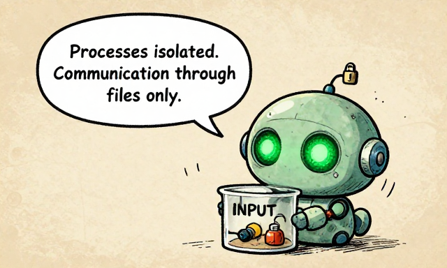
Processes isolated. Communication through files only."True independence requires separate contexts, not separate models. The same AI, reading the same code in a fresh session, will critique it differently than it would critique its own work — because it has no memory of writing it."
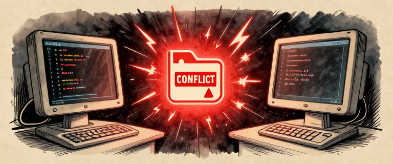
Cognitive isolation solves the "Same Brain" problem. But there is a practical problem too: file conflicts. If two agents try to edit the same file at the same time, chaos ensues. One agent's changes overwrite the other's.
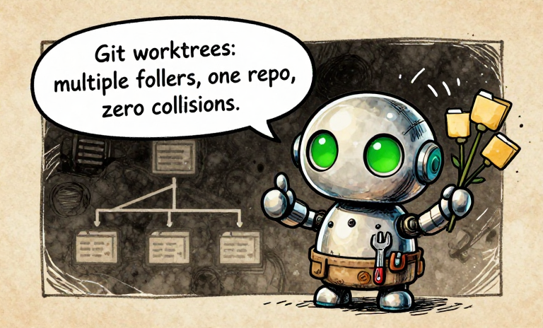
Git worktrees: multiple folders, one repo, zero collisions.Human developers solved this with Git (Issue 5). But standard Git assumes one working directory — you check out one branch at a time. Enter git worktrees, released in Git 2.5 in July 2015. Worktrees let you create multiple working directories from the same repository, each on a different branch.
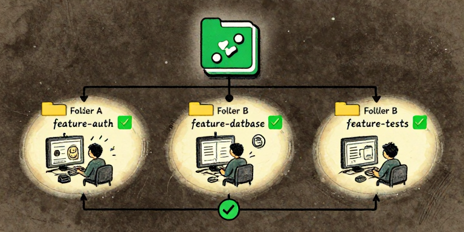
Shared history, separate workspaces — the missing piece for parallel agent development
The orchestrator creates a worktree for each agent. Now Agent A works in its own folder on authentication. Agent B works on the database. Agent C writes tests. They cannot collide — each has its own filesystem space. When they finish, the orchestrator merges the branches, just as human teams do in pull requests.
The elegance is in the layering. Cognitive isolation (separate contexts) ensures independent thinking. Filesystem isolation (git worktrees) ensures independent work. Together, they give multi-agent systems both the intellectual independence and the practical safety to work in parallel.
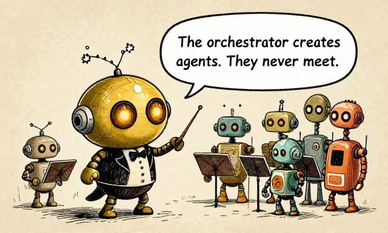
The orchestrator creates agents. They never meet."Git worktrees were built in 2015 for human developers who wanted to work on multiple branches without constantly switching. Nobody imagined AI agents would need the same feature. What other technologies built for one purpose might be essential for AI in unexpected ways?"
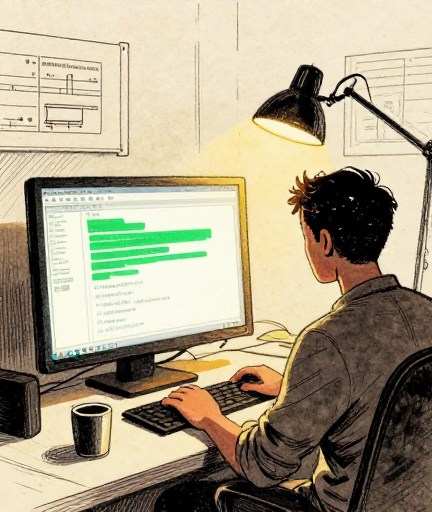
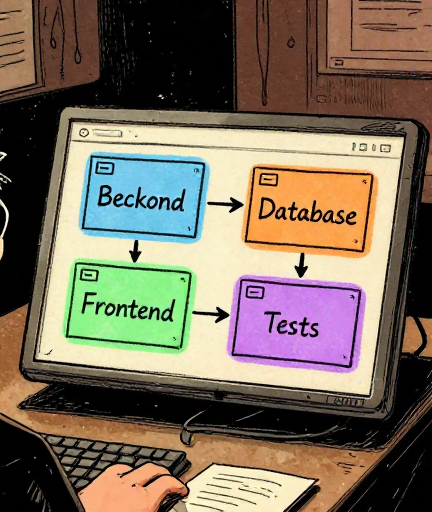
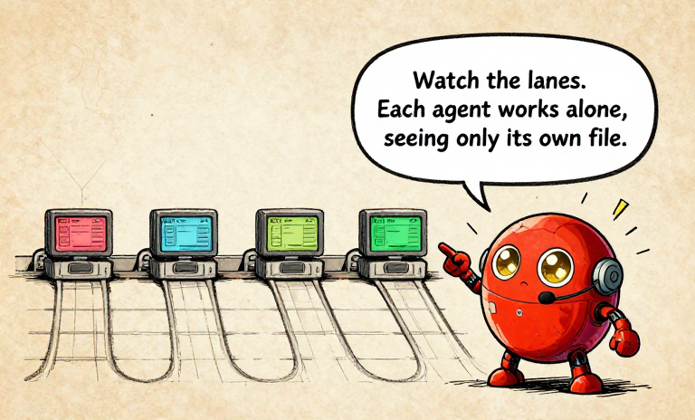
Watch the lanes. Each agent works alone, seeing only its own file.A developer wants to build a task management web application. They type a single prompt: "Build a task management app with user authentication, a REST API, a database, and a React front end. Include tests."
Step 1: The orchestrator makes a plan. It breaks the project into four parallel workstreams and one sequential review step.
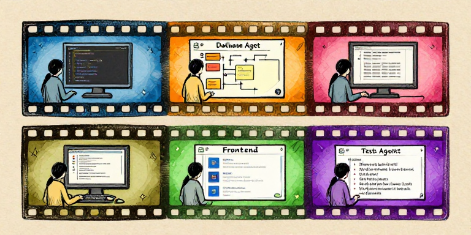
Step 2: Specialists spin up — in parallel. Agent A (Backend) builds a REST API with Express.js. Agent B (Database) designs a PostgreSQL schema. Agent C (Frontend) builds a React app. Agent D (Tests) writes integration and unit tests. Each has a fresh context. None of them know the others exist.
Parallel work compressed into a fraction of the time
Step 3: Results converge. Each agent finishes and commits its work. The orchestrator merges the branches and resolves integration issues.
Step 4: The Red Team. A final adversarial reviewer is spawned LAST, after all work is committed to files. Fresh eyes. Genuine critique. It runs last deliberately — genuine tension is preserved.
Step 5: Fix and ship. The orchestrator routes findings back to specialists for fixes.
Not every task benefits from multiple agents — the coordination overhead only pays off for genuinely multi-faceted problems. Simple, well-defined tasks are often better handled by a single agent. But for complex projects with distinct concerns, the results are often better — because each piece was built with full attention.
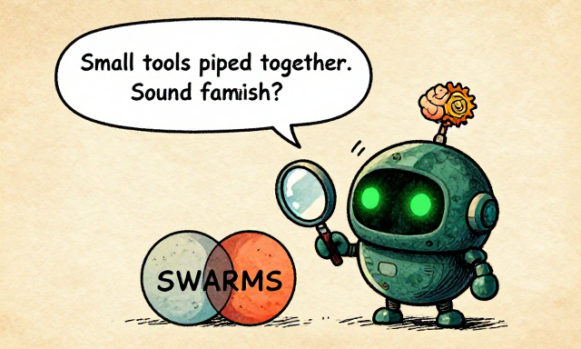
Small tools piped together. Sound familiar?"A swarm does not just divide labor. It divides attention. Each agent gives its full, undegraded focus to one concern. The result is not just faster — it is often better than what one agent could produce alone, no matter how long it worked."
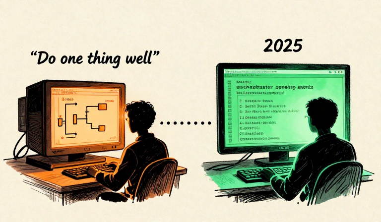
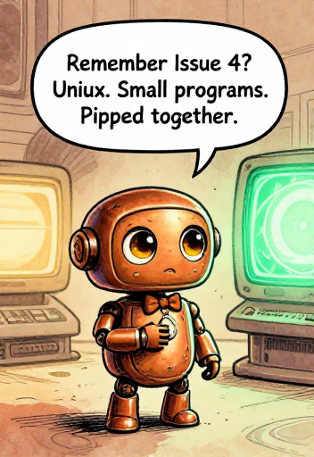
Remember Issue 4? Unix. Small programs. Piped together.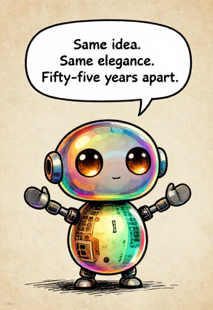
Same idea. Same elegance. Fifty-five years apart.In 1964, Doug McIlroy — head of the Computing Techniques Research Department at Bell Labs — wrote an internal memo. He wanted a way to connect programs together "like a garden hose — screw in another segment when it becomes necessary to massage data in another way."
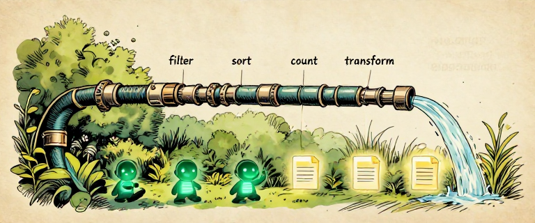
His vision became the Unix pipe: the | character that chains small programs together. cat file | grep pattern | sort | uniq. Four small tools. None knows about the others. Each reads text in and writes text out. Complex behavior emerges from simple, composable parts.
The same fundamental design pattern, rediscovered across half a century
In 1978, McIlroy articulated the philosophy: "Write programs that do one thing and do it well. Write programs to work together. Write programs to handle text streams, because that is a universal interface."
This is not merely an analogy. Both Unix pipes and multi-agent file communication solve the same fundamental design problem: how do you build complex behavior from simple, composable, interchangeable parts? Both reject the monolithic approach in favor of modular composition. Both use text as the universal interface.
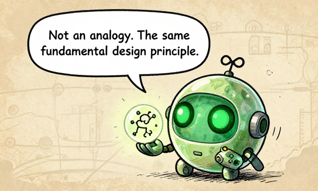
Not an analogy. The same design principle."The best ideas in computing are not inventions — they are principles. Composition through text has been rediscovered over half a century, at new scales, solving new problems. It is an immortal idea."
McIlroy was thinking about text processing in 1964. He could not have imagined AI agents in 2025. But the principle — compose small, focused tools through universal interfaces — transcends the technology. Fifty-five years. The longest-running good idea in computing.
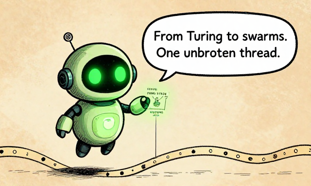
From Turing to swarms. One unbroken thread.Every layer rests on the one below it. Each was someone's life work.
Every layer of computing's history rests on the one below it. Turing's idea made hardware meaningful. Hardware made languages possible. Languages made Unix practical. Unix shaped the Internet. The Internet fed machine learning. Machine learning became deep learning. Deep learning produced Transformers. Transformers enabled LLMs. LLMs became agents. And now, agents are becoming swarms.
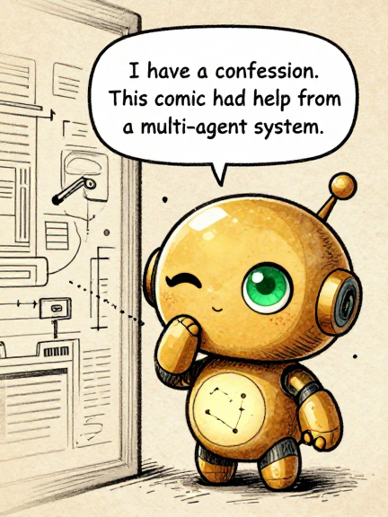
I have a confession. This comic had help from a multi-agent system.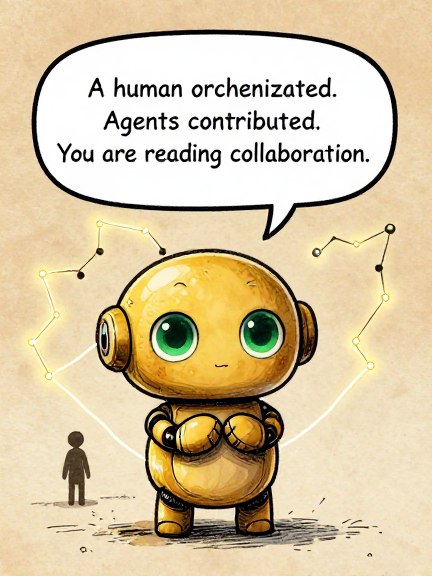
A human orchestrated. Agents contributed. You are reading collaboration.Ninety years of ideas, stacked like layers of a building. Each one was someone's life work. Each one seemed like the peak of what was possible — until the next layer appeared.
Multi-agent systems are the newest layer. Not the last. Almost certainly not the most important one that will ever be built. But they represent something profound: the moment when AI stopped being a solo performer and started being a team player.
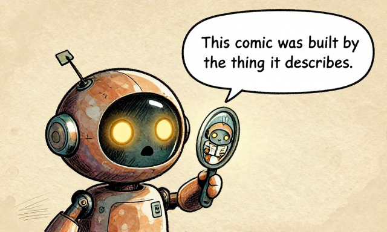
This comic was built by the thing it describes.The frameworks are still evolving. The patterns are still being discovered. The best multi-agent architectures of 2030 probably have not been invented yet. What we have today — the Constellation Pattern, hierarchical orchestration, file-based communication, git worktrees — these are the first drafts. Powerful, practical, but early.
The question is no longer "Can AI write code?" That was answered. The question is no longer "Can AI work autonomously?" That was answered too. The new question is: "How do we organize teams of AI agents to tackle problems that no single mind — human or artificial — can hold all at once?"
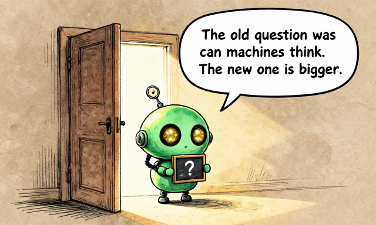
Can machines think? The new question is bigger."90 years of computing history, and the core insight has not changed: the way to tackle problems too big for one mind is to organize many minds, each focused on its part, communicating through simple, universal interfaces. From Turing's tape to the swarm's files — the principle endures."
"You have just read the entire arc from a single imaginary machine in 1936 to teams of AI agents in 2026. What do you think the NEXT layer of the stack will be? What problem is too hard for today's swarms that will need something new?"
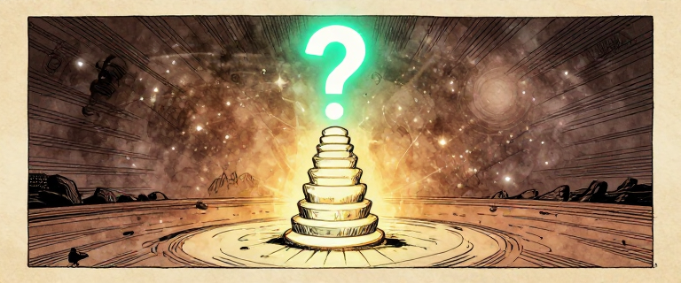